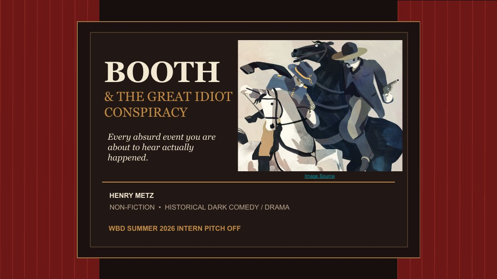

34th Street Magazine
Why is Spider-Man So Undeniably Loveable?
‘Brand New Day’ stumbles through parts of its story, but its hero remains perfect.
Art: Chenyao Liu / 34th Street MagazineWriting on film, television, media, and the business behind them.
34th Street Magazine
Film & TV Editor & Writer
‘Brand New Day’ stumbles through parts of its story, but its hero remains perfect.
Art: Chenyao Liu / 34th Street Magazine
What happens when a perfect franchise keeps going.
Art: Catherine Garcia / 34th Street Magazine
The final season delivers emotional payoff, but the show that once broke the mold settles for the bare minimum.
Art: 34th Street Magazine
‘The Mandalorian and Grogu’ is watchable entertainment, but that’s also part of the problem.
Art: Chenyao Liu / 34th Street Magazine
Louder spectacle can’t replace what made the Netflix original work so well.
Art: Chenyao Liu / 34th Street Magazine
What gets lost when you take the player out of the game—and what has to replace it.
Art: Insia Haque / 34th Street Magazine
FX’s acclaimed series captures what prestige TV looks like after its grand ambitions collapsed.
Art: Amy Luo / 34th Street MagazinePitch Deck
WBD Summer 2026 Intern Pitch-Off FinalistA historical dark comedy/drama built around the absurd true details of John Wilkes Booth’s conspiracy, developed and presented for the Warner Bros. Discovery Summer 2026 Intern Pitch-Off.

Other Work
Essays · Video · ResearchAbout
Philadelphia / OrlandoI’m a University of Pennsylvania student studying Cinema & Media Studies and Economics. I write about film, television, media, and the entertainment industry, with experience across criticism, publicity, events, production, and research.